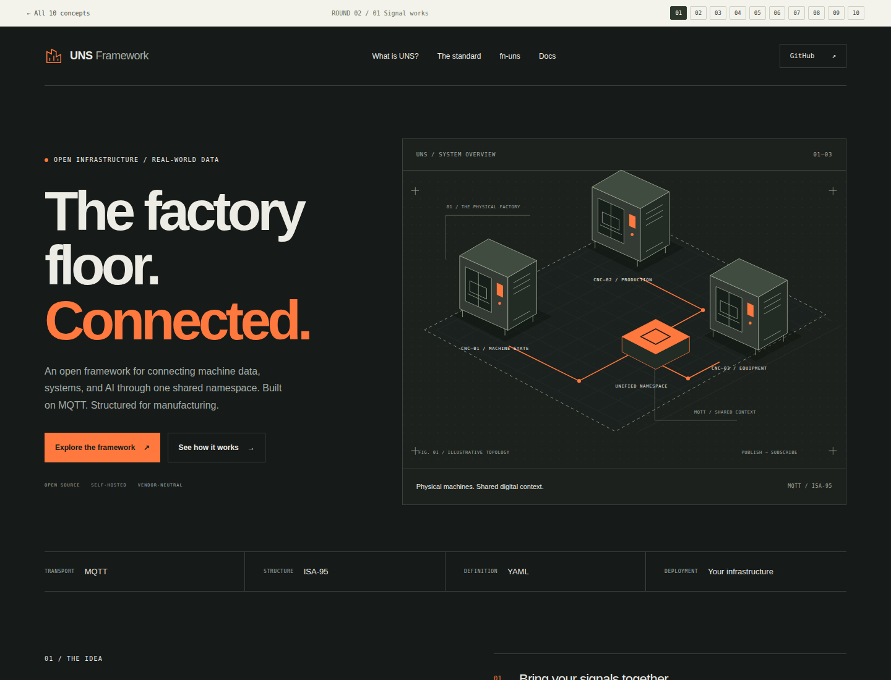
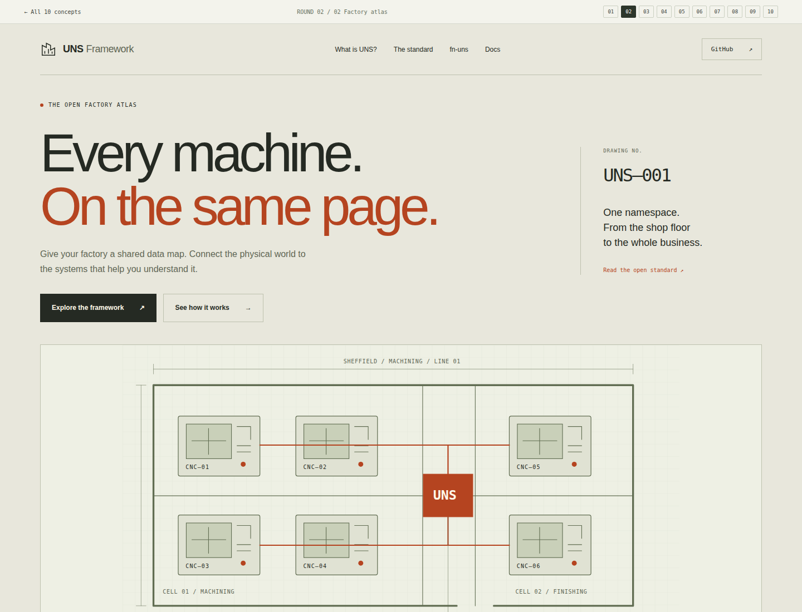
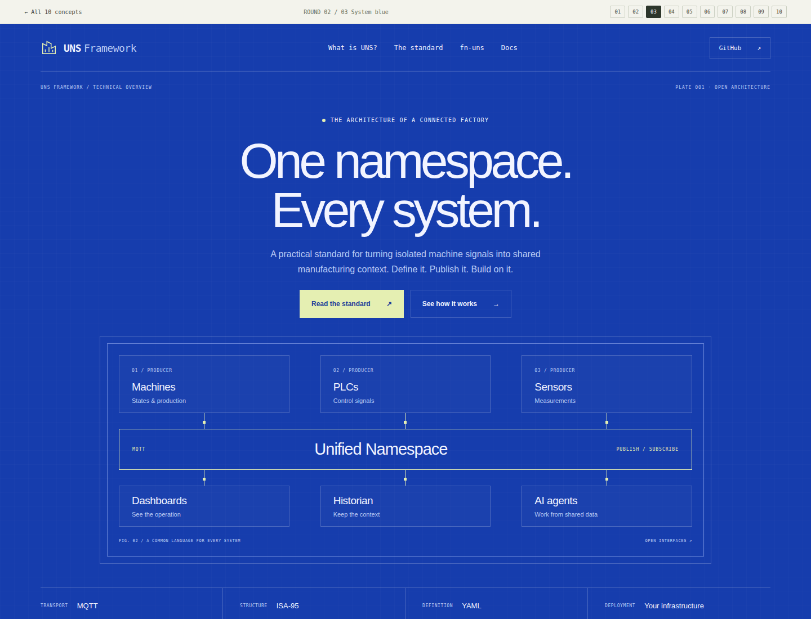
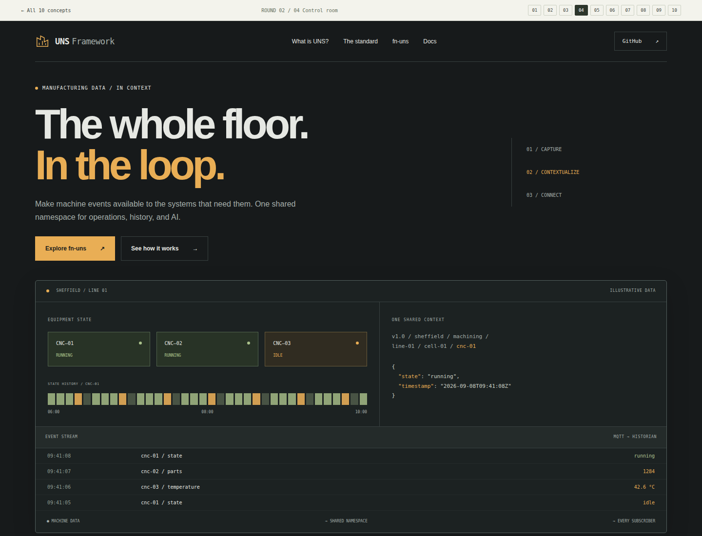
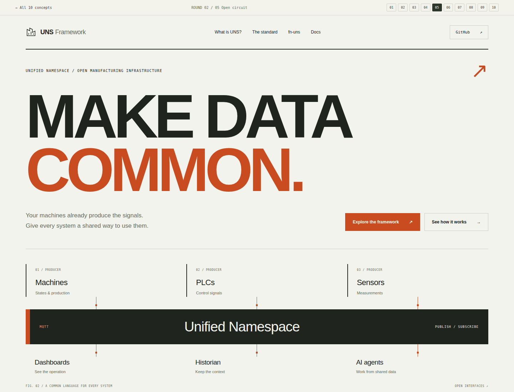
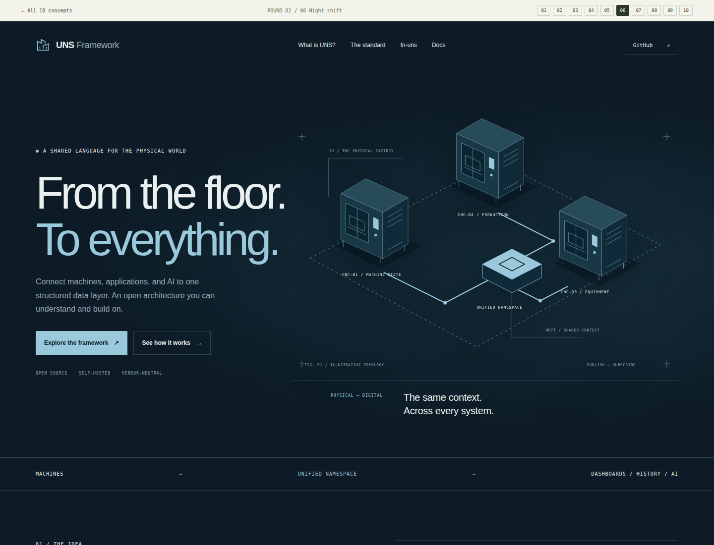
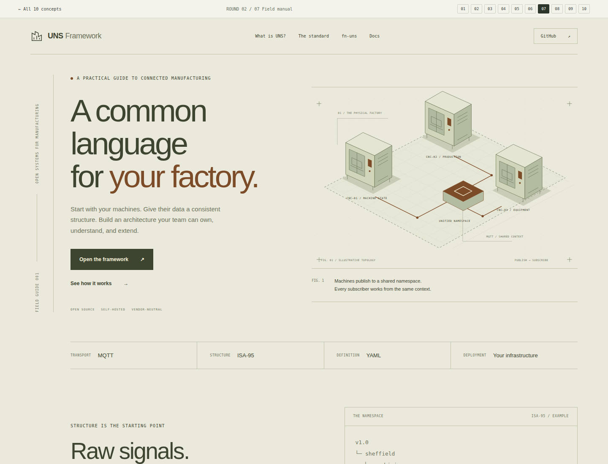
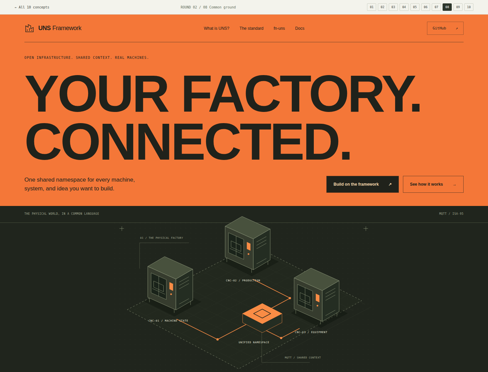
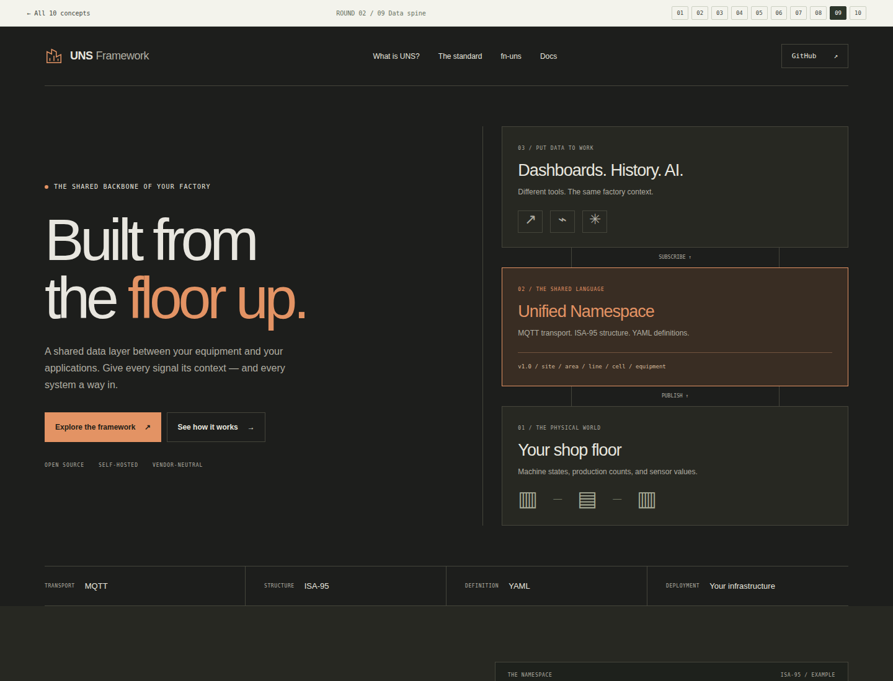
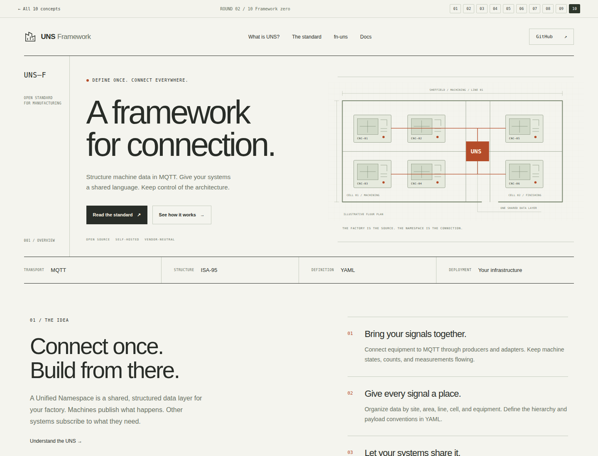

INDUSTRIAL CHARACTER. ARCHITECTURAL CLARITY.
Closer to the floor.
Ten new directions.
A second round built around the industrial feel of 01 and the blueprint clarity of 03. More factory, more structure, and ten different ways in.
ROUND 0201—10
STATIC HOMEPAGE STUDIES

Signal works
The closest evolution of 1: graphite, orange, a physical factory drawing, and a stronger technical story.
Explore concept 01 →
Factory atlas
An overhead factory plan becomes the homepage. Warm drafting paper, black ink, and orange routes.
Explore concept 02 →
System blue
The clarity of 3 with more substance: a full architecture plate, hierarchy, and implementation details.
Explore concept 03 →
Control room
A dark, dense operations view puts machine events and their shared context at the center.
Explore concept 04 →
Open circuit
Oversized black typography, sharp orange details, and an exposed data bus on a white canvas.
Explore concept 05 →
Night shift
Deep navy, ice-blue linework, and an isometric factory make the architecture feel tangible.
Explore concept 06 →
Field manual
An engineer’s field guide: olive ink, warm paper, numbered annotations, and a technical cutaway.
Explore concept 07 →
Common ground
A high-contrast orange masthead and a dark factory drawing. The loudest direction in this round.
Explore concept 08 →
Data spine
A vertical stack connects the physical factory to its digital systems, in charcoal and burnt orange.
Explore concept 09 →
Framework zero
A restrained industrial identity with a precise black-and-white drawing and one orange signal.
Explore concept 10 →THE STARTING POINT